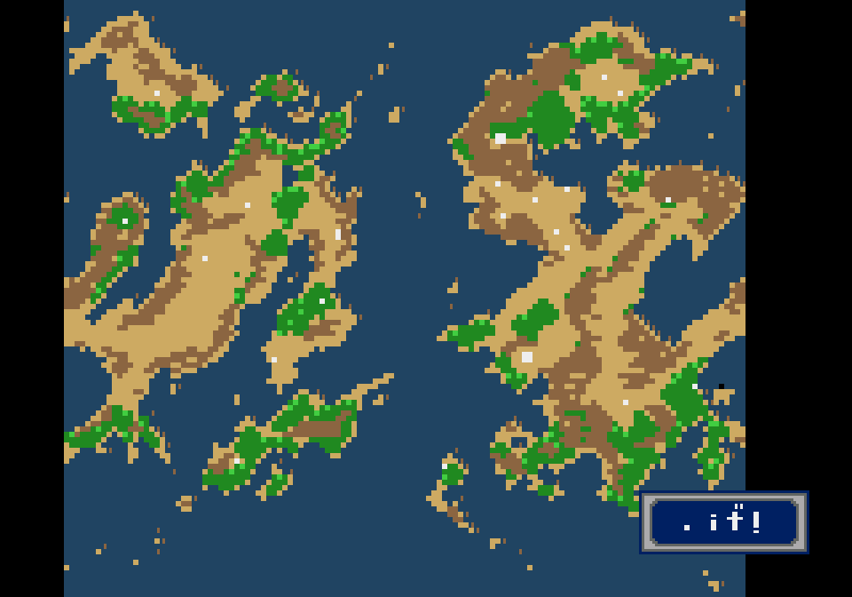
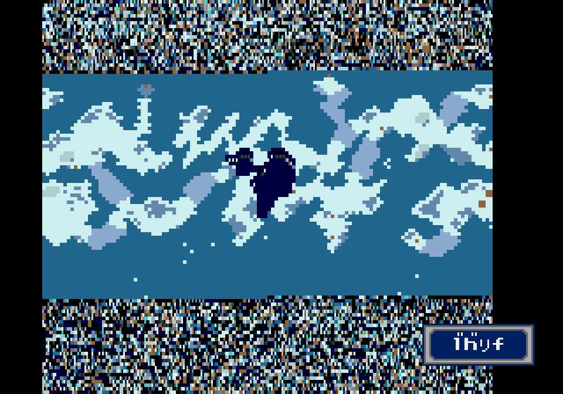

Phantasy Star IV's hidden world map
An unused atlas, running in the USA ROM
Phantasy Star IV can draw an atlas of Motavia and Dezolis. The USA ROM still contains the routine that opens it, the controls that scroll it, and the code that returns the party to exploration. With the right menu flag set in an emulator, both maps appear.
The screenshots below come from that test. The terrain is drawn by the game, using its own map data. The unreadable lettering in the corner is also the game's work.

An object with a map attached
The first link is in the item-action table. At ROM offset 0x5C0E0, item 0x8C points to a function at 0x5C118. The PS4 disassembly calls the item ItemID_Nothing4 and the function ItemAction_Map. Those names were supplied by the disassembly's authors; they aren't names recovered from Sega's source code.
The function checks where the party is. It accepts field-map IDs 0 and 1, Motavia and Dezolis, and rejects every other value. On an accepted map it sets bit 2 of the menu's exit flags. When the menu closes, another routine reads that flag and selects the world-map screen.
That connection suggests an atlas opened through an inventory item. It doesn't tell us where the player would have obtained the item, what it would have been called, or why it was left unused. This investigation hasn't established an ordinary way to acquire it.
Getting the screen to open properly
The disassembly already identifies the world-map routine as unused. The test here follows that lead into the retail USA ROM and checks what happens when the game runs it.
Jumping straight into the routine gave misleading results. Opening it while a town was loaded produced the wrong colours. A direct entry on Dezolis left scraps of graphics above and below the map. Those screenshots would have made the atlas look more broken than it is.
The successful test loaded each planet with the game's field loader, opened the camp menu, and set the map-request bit in RAM. Cancelling out of the menu then let the original exit code do its work, including reloading map chunks before opening the atlas. The colours were correct, and the scraps around Dezolis disappeared.
The ROM itself was unchanged. These were controlled emulator states with event and collision checks bypassed and random encounters disabled. The bypass kept the early story from sending the party back to Piata during the test. We exercised the menu-exit route; we did not obtain and use item 0x8C through normal play.

How the game draws the terrain
The renderer begins at 0x66658. It chooses a source address for the current planet, then processes sixteen blocks of 1,024 bytes. Each source byte selects a value from a planet-specific colour table. The routine writes the resulting tile graphics into RAM and transfers them to video memory.
This explains the broad patches of desert and snow in the screenshots. The atlas reduces the map's chunk IDs, which identify pieces of terrain, to colour values. The drawing comes from that conversion rather than a separate, hand-drawn atlas illustration.
Motavia and Dezolis have separate conversion tables. The renderer also treats their shapes differently: Dezolis starts with a vertical scroll offset of minus 48 pixels, placing its map in a horizontal band.
Scrolling, then going back
On Motavia, the direction buttons move the view horizontally and vertically. Holding Right for twelve emulated frames increased the horizontal camera value by 24 pixels. Holding Down for another twelve increased the vertical value by the same amount.
Dezolis accepts horizontal movement only. The code explicitly removes the Up and Down input bits for that planet. The emulator confirmed it: Right moved the view 24 pixels in twelve frames, while Down left the vertical offset unchanged.
| Test | Motavia | Dezolis |
|---|---|---|
| Right held for 12 frames | 24 pixels | 24 pixels |
| Down held for 12 frames | 24 pixels | No movement |
| Cancel closes the atlas | Yes | Yes |
| Position and cameras restored | Exact match | Exact match |
Closing the atlas restored both camera positions and the party leader's coordinates to their values before opening it. The game returned to its normal control routine. A subsequent movement input moved the leader on both planets, so the return path worked beyond simply putting the old screen back on display.
The label still needs work
Both maps have a small text box at the bottom right. In this USA build, its characters don't form a readable planet name. The routine selects a different short string for each planet, but the test doesn't establish whether the fault lies in those strings, the font mapping, or another part of text rendering.
It would be premature to call the lettering surviving Japanese text. That needs a comparison of the text bytes and the glyphs the game loads. The screenshots preserve the defect so that it can be examined.
The remaining code supports a working atlas screen, with an item-action link and a functioning way back to exploration. A restoration patch would still need readable labels and an accessible way to open it, followed by tests in ordinary campaign saves with the debug bypass disabled. The reason Sega left it out remains unanswered.
ROM addresses, sources and test details
Tests used Genesis Plus GX and a 3,145,728-byte Phantasy Star IV (USA) ROM. All addresses below refer to that build. ROM offsets and RAM addresses are listed separately.
ROM SHA-256: 511f35cc11f88316f8b8940e28ab298bd75a4da193672a80172884d6eb913b6a
| Location | Purpose |
|---|---|
ROM 0x5C0E0 | Item 0x8C action-table entry |
ROM 0x5C118 | Map eligibility check and request flag |
ROM 0x66658 | Atlas renderer |
ROM 0x66888 | Scrolling and exit input loop |
ROM 0x668EA | Return to exploration |
ROM 0x66986 / 0x66A5A | Motavia / Dezolis colour tables |
RAM 0xFFEC27, bit 2 | Menu-exit map request |
RAM 0xFFEC28 | Current field-map ID (word) |
RAM 0xFFEC20 | Field routine (word); 0x20 selects the atlas |
The code reference is ps4disasm, revision 8a65831, especially ItemAction_Map, MenuExit_OpenMap and FieldRoutine_WorldMap. The item entry and its handler were checked against the ROM bytes. This article builds on that disassembly and makes no claim of first discovery.
Read the recorded camera and position measurements (JSON). The screenshots are emulator captures enlarged with nearest-neighbour scaling. No ROM or emulator save state is distributed here.